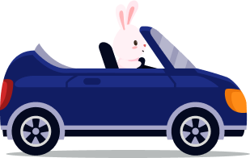
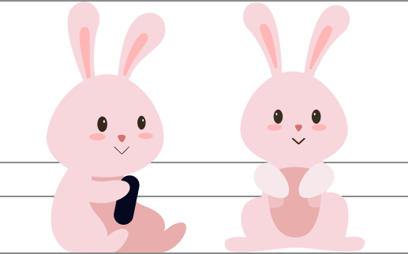

DRIVE RABBIT
DRIVE RABBIT은 아기자기한 마을을 둘러보며
베스트 드라이버 "YEKKI!" 와 함께 드라이브를 즐기는
HTML, CSS 기반 동적 애니메이션 홈페이지입니다
페이지 하단과 우측의 WEB 버튼을 클릭하고
마을 이곳저곳을 둘러보며 마우스로 여러 이벤트를 찾아보세요!
SCROLL
I'mYEKKI!
CHARACTER

YEKKI!
운전을 즐기는 드라이버 "YEKKI!"
CHRACTERISTIC
YEKKKI! 는 드라이브를 자주 나가는 베스트 드라이버로
친절에 감동받고 존중에 행복해지는 성격도 매너도 좋은 긍정 토끼입니다
바쁜 일에 치여 정신 없는 알바토끼를 공감하고 배려하는 모습을 보이며
항상 웃음을 잃지 않는 친절을 베풉니다
- #FFFFFF
- #F7D7DC
- #FFB6B4
- #E9ADAC
- #D4736F